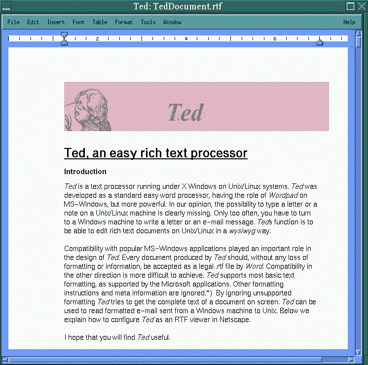

![[ TABLE OF CONTENTS ]](../gx/indexnew.gif)
![[ FRONT PAGE ]](../gx/homenew.gif)


Last month I wrote about the evolving AbiWord word processor. Another similar effort called Ted is being developed by Mark de Does, a programmer in the Netherlands. Rather than attempting to emulate the features of the ubiquitous MsWord, Mark has settled on a more modest goal (but a goal more likely to be achieved by a single developer): a word processor analogous to WordPad, a small application bundled with Windows. The idea is to facilitate document exchange with Windows users, using RTF (Rich Text Format) as the compatible file format. Both MsWord and WordPad can read RTF documents created with Ted, though for various familiar reasons the opposite won't always be true. But if you would like to be able to send documents formatted with your choice of fonts and even including embedded images and hyperlinks, Ted is well worth trying.
Mark de Does' motivation for starting this project two years ago were threefold:
Ted is primarily a one-man project. The graphics and regular-expression
code and the spelling dictionaries were borrowed from other free software
projects, but the bulk of the code is Mark's. Feedback and suggestions from
users have been important; Mark writes:
Feedback in the form of bug reports and feature requests from users have been essential for reaching the point where I am now. Though this kind of contribution is commonly not as highly appreciated as coding work, it might actually be more important. It keeps our feet on the ground and us from autistic excursions into pure technology.
The Ted ftp site, hosted by a Linux user's group when Mark's site was unable to handle the load, is the place to visit for the latest binary packages as well as source code (Ted is licensed under the GPL). The binaries are statically linked with the Motif libraries and are packaged in RPM as well as tar.gz files. Static linking means that it isn't necessary to have the proprietary Motif libs in order run Ted. I've found that the source distribution compiles easily using the freely available Lesstif libraries and headers, and the resulting binary is much smaller due to its use of local shared libraries. In order to successfully compile Ted you will also need to have the development packages for the libtiff, libgif, libjpeg, libpng, and libxpm graphics formats. These should be included on just about any Linux distribution CD.
After installation you will find the executable, Ted, in /usr/local/bin, a dictionary file in /usr/local/ind (a three-megabyte binary database derived from the ispell dictionary), and a sample RTF file (TedDocument.rtf, located in /usr/local/info) which is simultaneously a demonstration of Ted's capabilities and a help file. Dictionary files are available for a growing variety of languages.
To get an idea of what Ted can do, try loading the above-mentioned file in Ted; just type Ted /usr/local/info/TedDocument.rtf at a shell prompt.
Here is a screenshot of the first page of this file.:

Mark maintains a web site devoted to information and news about Ted.
As in most word processors, tab-stops are visible above the text window and
can be adjusted with the mouse. Ted has its own font directory,
/usr/local/afm, with a few basic Postscript fonts installed. More
fonts can be added, though the procedure sounds a little tricky. In the
Font menu, below items which toggle bold and italic, is an entry which
will invoke the Font Tool, a small separate window which allows changing the
font of a selected region. At first I assumed that setting the font in the
Font Tool window would change the font for subsequently typed text, but it
only works for selected text. The default font is ten point Helvetica; this
can be changed by creating a file in your home directory named Ted. The
following line in this file will cause new documents to use 14 point Times New
Roman rather than Helvetica:
Ted.defaultFont: Times,,,14
Tables are well supported. A simple four-cell table can be inserted by selecting Insert Table from the Table menu; additional rows and columns can be added using the same menu. The table cells dynamically expand as they are filled with text. A window called Table Tool can be summoned from this menu. The Table Tool allows fine-tuning of margins, row and column size, and style of cell. The cells can be freely expanding (the default) or of a fixed or minimum size.
The image-insertion capabilities are one of Ted's strong points. Images in any of the common image formats, including JPEG, GIF, TIFF, and PNG, can be inserted into a document, then positioned and resized. When a file is saved in the RTF format, the image is converted to a Windows MetaFile, which is basically a wrapper for a BMP bitmap image. Save the file as an HTML file and a copy of the image file is created in a subdirectory of the parent document's directory. An image link is created which points to the new image file. There is one disadvantage to RTF documents with images: the files can be very large. The images within the document are necessarily in a bulky and uncompressed form. Image-laden files saved as HTML tend to be much smaller.
I tried opening several RTF files including embedded images using MsWord and they were all displayed properly.
Another impressive pair of features are the ability to place hyperlinks and bookmarks in a file. The hyperlinks, either referring to local files or remote URLs, are set by entering the information in a dialog box. Bookmarks are defined in a similar manner. If a document is saved as an HTML file these links become "<a ref>" or "<a name>" HTML tags. These references can be accessed from a file saved in RTF format by means of the same dialog boxes used to set them.
The HTML tagging produced by Ted is rather unusual, though Netscape can interpret it just fine. The intent is for the browser-rendered HTML to reproduce as accurately as possible a document's appearance in RTF format. This necessitated extensive use of the "<font>" tag, as well as use of the "<div>" tag rather than "<p>" to separate paragraphs.
Ted should be useful to users communicating with the mainstream Windows-centric world, but I've found it to be a valuable piece of software in its own right. Using Ted is an easy way to create nicely-formatted documents with in-line graphics without having to deal with HTML or LaTeX tagging, and without needing to fire up a bulky browser in order to view them.